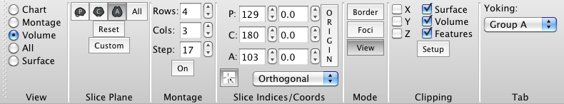

- The Toolbar can be hidden or shown
using the
 button at the top
right of the Workbench Window or by clicking on Toolbar in
the View Menu.
button at the top
right of the Workbench Window or by clicking on Toolbar in
the View Menu.
- Tooltips
(available by hovering mouse over buttons/elements) are an
easy way to see information on the buttons and functions
on the Toolbar (or throughout wb_view).
